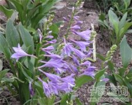

紫玉簪

拼音
Zǐ Yù Zān
别名
紫萼、山玉簪
来源
百合科玉簪属植物紫玉簪Hosta ventricosa （Salisb.）Stearn，以全草或根入药。全草四季可采，一般鲜用；根秋后采挖，洗净鲜用或晒干。
生境分布
生于山坡林下的阴湿地区，亦有栽培。
药材特点
多年生草本，高达60～70厘米。根茎粗壮。单叶基生；柄长约25厘米；叶片卵形，长达16厘米，先端急尖，全缘或稍作波状，基部楔形，其两侧下延几达柄之基部，上面深绿色，有光泽，下面绿色，叶脉约7对，弧形，凸出而明显。花葶由叶丛中抽出，长约60厘米，花葶中部有叶状膜质苞片；总状花序，有短梗，长1厘米，梗基部有1斜卵形之苞片，绿色；花被6，淡紫色，钟形，长约1.7厘米，先端6裂，裂片成三角形；雄蕊6，花丝较花被稍长，药红紫色；子房无柄，长圆筒形，3室，花柱较花丝长，柱头头状。蒴果，筒形，两端尖，长约3厘米。种子黑色，有光泽。花期6月。果熟期8～9月。 本植物的根茎（紫玉簪根）、叶（紫玉簪叶）亦供药用，各详专条。
性状
无性状数据
性味
微甘，凉。
功能主治
散瘀止痛，解毒。用于胃痛，跌打损伤，鱼骨梗喉；外用治虫蛇咬伤，痈肿疔疮。
用法用量
2～3钱。配伍其他药兑酒服或水煎服。
化学成分
无化学成分数据
药理作用
1：无药理作用数据
摘录
《全国中草药汇编》